Quay Proxy Cache Initialization for OpenShift 4.20
Overview
OpenShift Container Platform (OCP) relies on container images distributed across multiple upstream registries during both installation and ongoing operations. During a standard OCP 4.20 deployment, the cluster pulls images from at least three major sources:
quay.io— the primary Red Hat container registry hosting OpenShift release images, operators, and community contentregistry.redhat.io— Red Hat’s authenticated registry for official Red Hat product imagesregistry.connect.redhat.com— the Red Hat Connect registry for partner-certified container images
In environments with limited or restricted internet access (air-gapped labs, on-premise data centers, or bandwidth-constrained setups), repeatedly pulling from these upstream registries can be slow, unreliable, or simply impossible. Furthermore, when multiple OpenShift nodes need to pull the same images simultaneously during installation, the redundant upstream requests create unnecessary load on the network.
Quay’s Proxy Cache feature addresses both problems. When configured as a pull-through cache, Quay intercepts an image pull request, fetches the image from the upstream registry on behalf of the client (if not already cached), and stores it locally. All subsequent pull requests for the same image are served directly from the local Quay instance — no upstream traffic needed.
This document walks through the complete, step-by-step process of initializing a Quay proxy cache for an OpenShift 4.20 lab environment, covering:
- Creating a Quay API access token with the necessary organizational permissions
- Automatically provisioning one cache organization per upstream registry using helper scripts
- Configuring authenticated pull credentials for Red Hat’s protected registries
- Verifying the end-to-end setup by pulling images through the proxy
Architecture
The Quay instance used in this lab is deployed at
mirror.infra.wzhlab.top:8443. For each upstream
registry to be proxied, a dedicated Quay
organization is created following this naming
convention:
cache_<upstream_registry_hostname_with_dots_replaced_by_underscores>The mapping looks like this:
| Upstream Registry | Quay Proxy Cache Organization |
|---|---|
quay.io |
cache_quay_io |
registry.redhat.io |
cache_registry_redhat_io |
registry.connect.redhat.com |
cache_registry_connect_redhat_com |
When an OpenShift node or operator pulls an image such as:
mirror.infra.wzhlab.top:8443/cache_quay_io/openshift-release-dev/ocp-release:4.20.16-x86_64Quay transparently fetches
quay.io/openshift-release-dev/ocp-release:4.20.16-x86_64
from the upstream on the first request, stores it in local
storage, and returns it to the caller. All subsequent pulls of
the same image are served from the local cache without any
upstream traffic.
Prerequisites
Before proceeding, ensure the following are available in your environment:
- A running Red Hat Quay instance (version
3.7 or later recommended) reachable at
mirror.infra.wzhlab.top:8443 - A Quay superuser or organization-admin
account (e.g.,
admin) with permission to create organizations and configure proxy cache settings - A Red Hat pull secret
(
pull-secret.json) downloaded from https://console.redhat.com/openshift/install/pull-secret, containing base64-encoded credentials for all Red Hat registries - The following CLI tools available on the operator
workstation:
curl,jq,wget,bash,podman
Step 1: Create a Quay API Access Token
To automate the creation and configuration of proxy cache organizations via the Quay REST API, an OAuth application access token is required. This token is created through the Quay web UI under an organization’s application settings. It must be granted the Administer Organization scope so that it can create and configure proxy cache organizations on your behalf.
The following screenshots illustrate the complete token creation workflow in the Quay web UI:
1.1 — Navigate to your organization’s “Applications” page and create a new OAuth application:
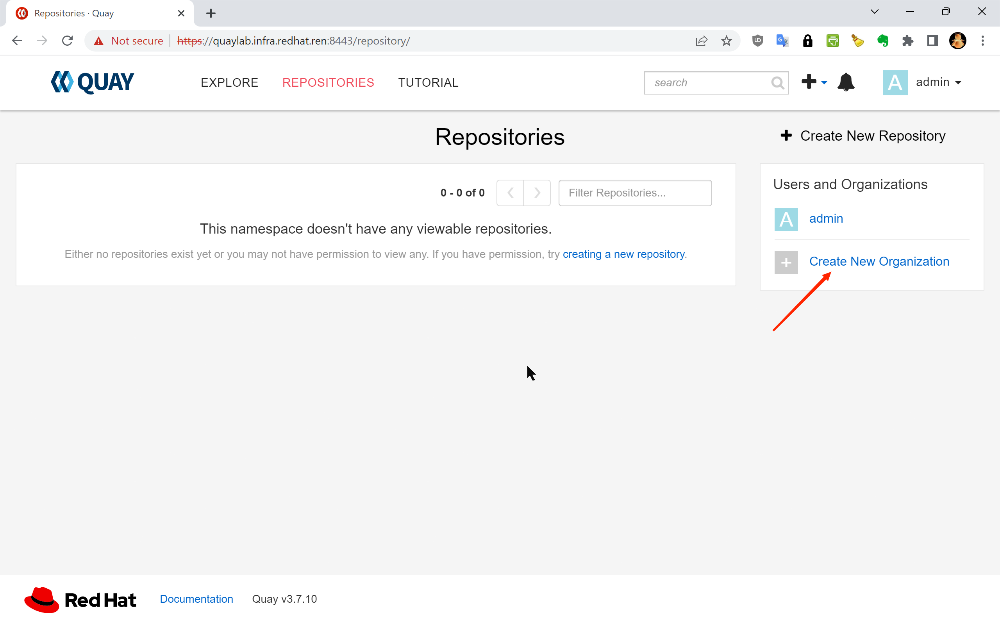
1.2 — The OAuth Applications list page:
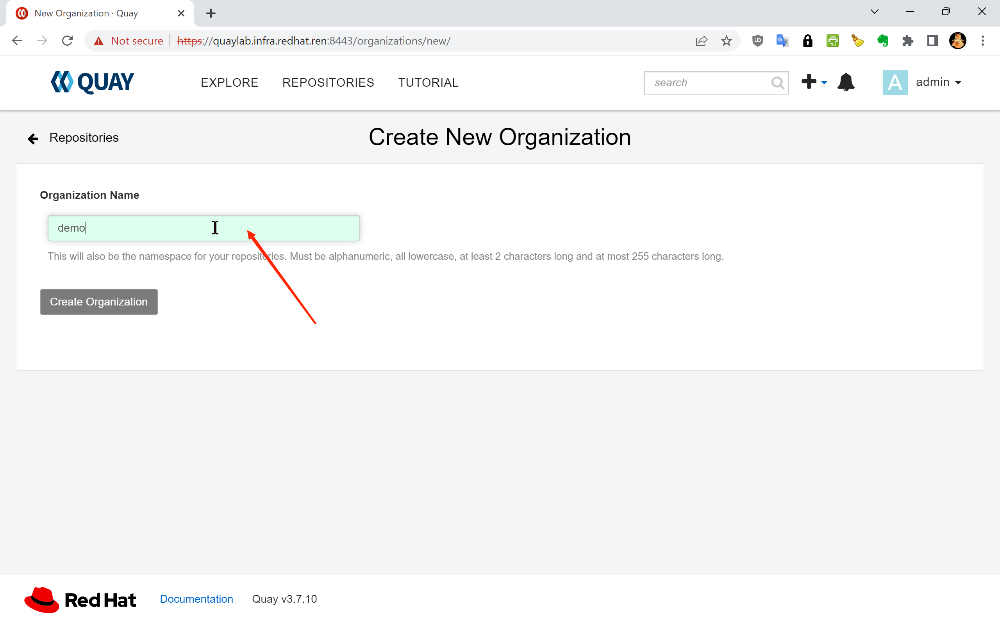
1.3 — Enter an application name (e.g.,
cache-init) and click “Create
Application”:
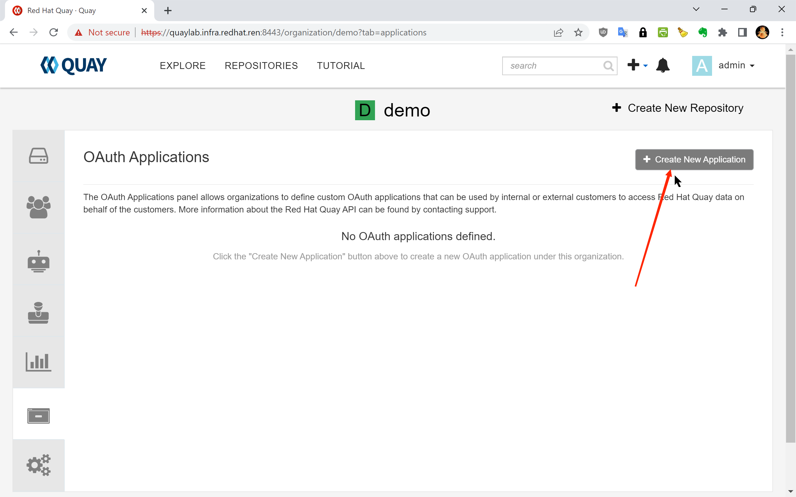
1.4 — Select “Generate Token” from the application detail page:
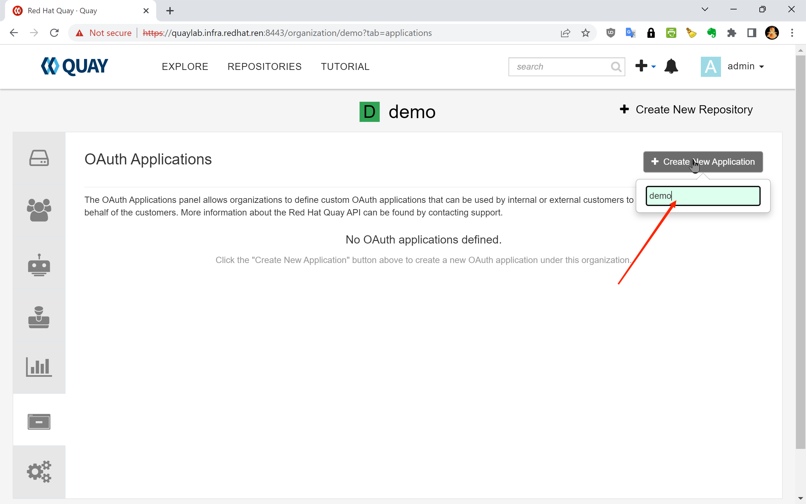
1.5 — Select the required permission scope. Check “Administer Organization” to allow the token to manage organizations and their proxy cache settings:
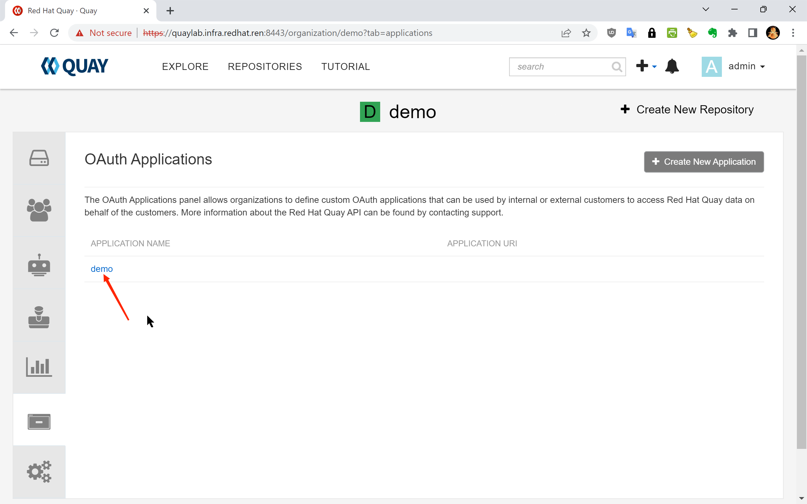
1.6 — Click “Authorize Application” to proceed:
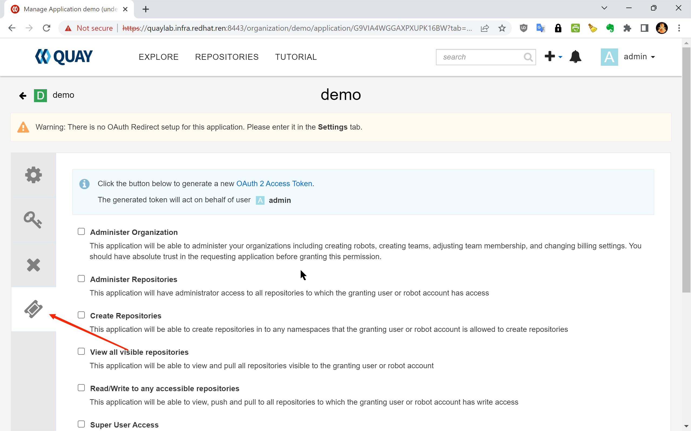
1.7 — Confirm the authorization on the next screen:
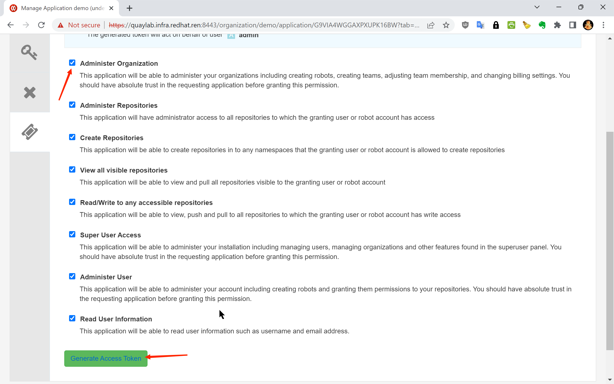
1.8 — The token has been successfully generated:
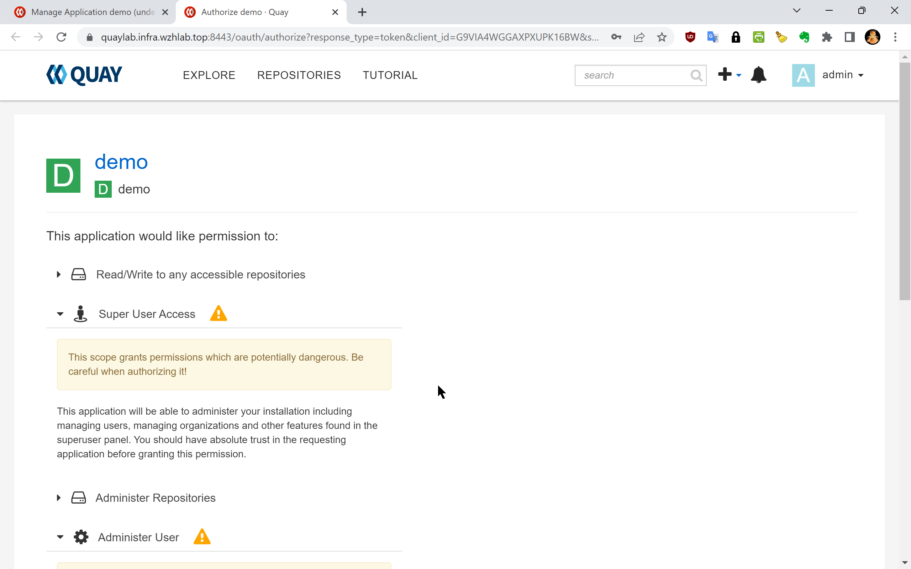
1.9 — Copy the full token string. This is the only time it will be displayed:
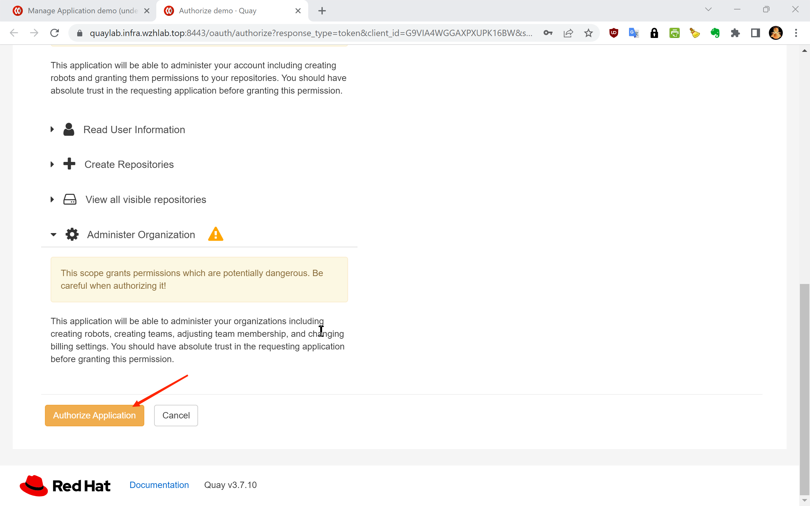
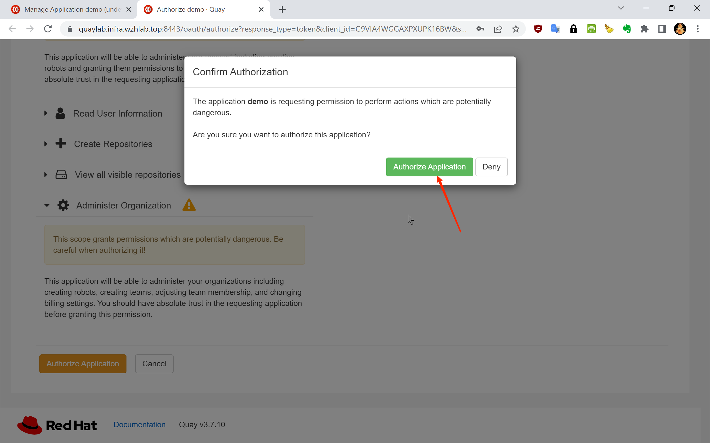
1.10 — Token creation confirmed. The application now has an active access token:
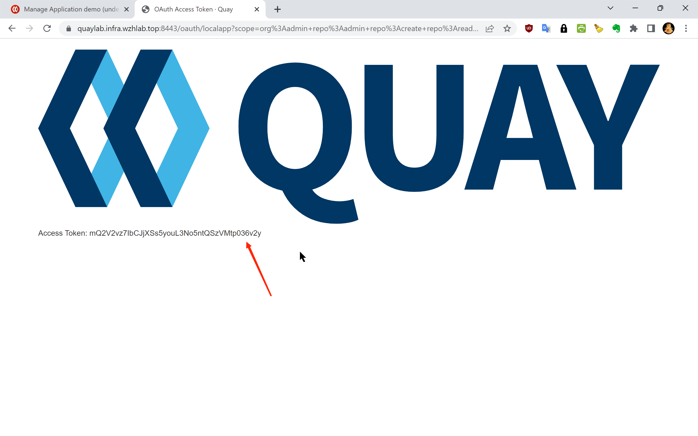
The resulting access token for this lab environment is:
Access Token: y1pqTUBQJ8PEXwr4AYhFPzJSfwrITYWjCHIvs4meSecurity Note: Treat this token as a sensitive credential. Do not commit it to source control. In production environments, store it in a secrets management system such as HashiCorp Vault or an OCP Secret, and rotate it regularly.
Step 2: Create Proxy Cache Organizations
With the API token in hand, the next step is to provision one
Quay organization per upstream registry. Each organization will
be configured as a proxy cache pointing to its corresponding
upstream. This process is automated by the
quay.cache.repo.sh helper script, which reads a
domain list file (mirror.domain.list) and calls the
Quay API to create each organization.
2.1 — Download the Required Scripts
# Create the working directory for OCP4 setup artifacts
mkdir -p /data/ocp4
cd /data/ocp4
# Download the list of upstream registry domains to be proxied
wget https://raw.githubusercontent.com/wangzheng422/openshift4-shell/ocp-4.20/image-list/mirror.domain.list
# Download the Quay proxy cache organization management script
wget https://raw.githubusercontent.com/wangzheng422/openshift4-shell/ocp-4.20/image-list/quay.cache.repo.sh2.2 — Create the Proxy Cache Organizations
The create subcommand of
quay.cache.repo.sh iterates over every domain in
mirror.domain.list and creates a corresponding
proxy cache organization in Quay via the REST API.
# Set the target Quay instance hostname and the API access token from Step 1
QUAY_LAB=mirror.infra.wzhlab.top:8443
TOKEN=y1pqTUBQJ8PEXwr4AYhFPzJSfwrITYWjCHIvs4me
# Create all proxy cache organizations defined in mirror.domain.list
cd /data/ocp4/
bash quay.cache.repo.sh create $QUAY_LAB $TOKENAfter this step completes, you should see the newly created
organizations (e.g., cache_quay_io,
cache_registry_redhat_io) in the Quay web UI. Each
organization will have its proxy cache configuration pointing to
the corresponding upstream registry.
2.3 — (Optional) Delete Cache Organizations
If you need to tear down and reinitialize the cache
organizations, use the delete subcommand. This is
useful when troubleshooting or rebuilding a lab environment.
# Remove all proxy cache organizations created by this script (use with caution)
cd /data/ocp4/
bash quay.cache.repo.sh delete $QUAY_LAB $TOKEN2.4 — (Reference) Generate OpenShift Registry Mirror Configuration
The following script generates the
ImageContentSourcePolicy or
ImageDigestMirrorSet YAML that instructs OpenShift
nodes to redirect image pull requests to the local Quay proxy.
This step is typically performed as part of the OpenShift
cluster configuration and is documented separately. It is listed
here for reference:
# Generate the Quay cache registry mirror configuration for the OpenShift cluster
cd /data/ocp4/
wget https://raw.githubusercontent.com/wangzheng422/openshift4-shell/ocp-4.20/image-list/image.registries.conf.quay.sh
bash image.registries.conf.quay.sh $QUAY_LABStep 3: Configure Upstream Registry Credentials
While some upstream registries (such as
docker.io) permit anonymous image pulls, the core
Red Hat registries require valid credentials:
registry.redhat.io— requires a Red Hat Customer Portal account or a service accountregistry.connect.redhat.com— requires a Red Hat Connect accountquay.io— supports anonymous pulls for public images, but authenticated pulls may be needed for rate-limit-sensitive workloads
Without these credentials configured in Quay’s proxy cache settings, Quay will fail to fetch images from the upstream on the client’s behalf, resulting in pull errors during OCP installation and operator deployment.
The credentials are already embedded in the pull secret file
(pull-secret.json) that was downloaded from the Red
Hat console. The script below extracts them automatically for
each registry and applies them to the corresponding Quay proxy
cache organization via the API.
3.1 — Define the Credential Update Function
The update_quay_cache_config function performs a
two-step API operation for each registry:
- DELETE the existing proxy cache configuration to clear any stale credentials
- POST a new proxy cache configuration with the correct upstream hostname and credentials
update_quay_cache_config() {
local_quay=$1
local_token=$2
local_registry=$3
local_username=$4
local_password=$5
# Step 1: Remove the existing proxy cache configuration for this organization.
# This ensures we start from a clean state before applying new credentials.
curl -X 'DELETE' \
"https://$local_quay/api/v1/organization/cache_${local_registry//./_}/proxycache" \
-H "Authorization: Bearer $local_token" \
-H 'Content-Type: application/json' | jq
# Step 2: Create a new proxy cache configuration with the upstream registry
# hostname and the corresponding authentication credentials.
curl -X 'POST' \
"https://$local_quay/api/v1/organization/cache_${local_registry//./_}/proxycache" \
-H "Authorization: Bearer $local_token" \
-H 'Content-Type: application/json' \
-d "{
\"org_name\": \"cache_${local_registry//./_}\",
\"upstream_registry\": \"$local_registry\",
\"upstream_registry_password\": \"$local_password\",
\"upstream_registry_username\": \"$local_username\"
}" | jq
}3.2 — Extract Credentials from the Pull Secret and Apply
The loop below iterates over each target registry, decodes
the base64-encoded auth field from the pull secret
JSON, splits it into username and password components, and calls
the update function.
# Define the list of upstream registries that require authenticated proxy cache configuration
registries=$(cat << EOF
quay.io
registry.redhat.io
registry.connect.redhat.com
EOF
)
QUAY_LAB=mirror.infra.wzhlab.top:8443
TOKEN=y1pqTUBQJ8PEXwr4AYhFPzJSfwrITYWjCHIvs4me
# Alternatively, credentials can be specified as literal strings (not recommended for scripted use):
# var_username="<your redhat username>"
# var_password="<your redhat password>"
# Iterate over each registry, extract credentials from pull-secret.json,
# and apply them to the corresponding Quay proxy cache organization
while read -r line; do
if [[ "$line" =~ [^[:space:]] ]]; then
echo $line
# Decode the base64-encoded auth string for this registry entry in the pull secret
var_auth=$(cat $BASE_DIR/data/pull-secret.json | jq -r ".auths[\"$line\"].auth" | base64 -d)
var_username=$(echo $var_auth | cut -d: -f1)
var_password=$(echo $var_auth | cut -d: -f2)
echo $var_auth
echo $var_username
echo $var_password
# Push the extracted credentials to the Quay proxy cache configuration for this registry
update_quay_cache_config $QUAY_LAB $TOKEN $line $var_username $var_password
fi
done <<< "$registries"After this step, each Quay proxy cache organization is fully configured with valid upstream credentials. Quay can now authenticate to the upstream registries on behalf of any client pulling through the proxy.
Step 4: Verify the Proxy Cache
With the proxy cache organizations created and credentials applied, the final step is to validate that image pulls are correctly routed through the local Quay instance and that Quay successfully fetches and caches images from the upstream.
The verification flow is:
- Authenticate against the local Quay instance with
podman login - Pull a known image using the proxy cache organization path
- Confirm a successful pull — Quay fetches from upstream on the first pull and caches it for subsequent requests
# Authenticate against the local Quay instance before pulling
podman login mirror.infra.wzhlab.top:8443 -u admin -p redhat..
# Test 1: Pull a general-purpose user image via the quay.io proxy cache
# This verifies basic pull-through functionality.
# Upstream source: quay.io/wangzheng422/debug-pod:alma-9.1
podman pull mirror.infra.wzhlab.top:8443/cache_quay_io/wangzheng422/debug-pod:alma-9.1
# Test 2: Pull an OCP release image by SHA256 digest (immutable, content-addressed reference)
# Useful for verifying that digest-based pulls work correctly through the proxy.
# Upstream source: quay.io/openshift-release-dev/ocp-release@sha256:5e2fb7...
podman pull mirror.infra.wzhlab.top:8443/cache_quay_io/openshift-release-dev/ocp-release@sha256:5e2fb7977a82237e497443e2bb53fd1c196e083fc5095294699399b61ce02746
# Test 3: Pull an OCP release image by tag
# Verifies that tag-based pulls work and that Quay resolves and caches the image correctly.
# Upstream source: quay.io/openshift-release-dev/ocp-release:4.20.16-x86_64
podman pull mirror.infra.wzhlab.top:8443/cache_quay_io/openshift-release-dev/ocp-release:4.20.16-x86_64A successful pull for all three test cases confirms that:
- The Quay proxy cache organizations are correctly created and enabled
- Upstream registry credentials are valid and properly configured in Quay
- The local
podmanclient trusts the Quay instance’s TLS certificate - Both tag-based and digest-based pull references work as expected
After the first pull of any given image, Quay stores a local copy in its object storage backend. All subsequent pulls of the same image will be served from this local cache without generating any upstream traffic — which is the core benefit of this proxy cache setup for disconnected or bandwidth-limited OpenShift deployments.
Summary
This document described the complete process for initializing Quay proxy cache organizations for an OpenShift 4.20 environment. The four steps are:
| Step | Description |
|---|---|
| 1. Create API Token | Generate a Quay OAuth token with
Administer Organization scope via the web UI |
| 2. Create Organizations | Use quay.cache.repo.sh to bulk-provision one
proxy cache org per upstream registry |
| 3. Configure Credentials | Extract credentials from the pull secret and apply them to each org’s proxy cache config |
| 4. Verify | Pull test images through the proxy to confirm end-to-end functionality |
With this infrastructure in place, OpenShift nodes and operators can pull all required images through the local Quay instance. This eliminates the dependency on external internet connectivity during cluster installation and runtime, and significantly reduces image pull latency in environments where the upstream registries are geographically distant or behind restricted network paths.